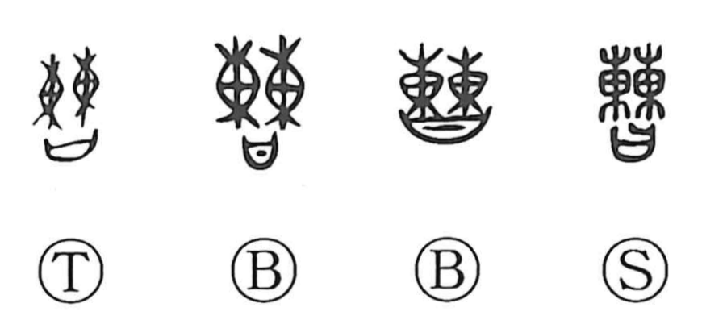

Explanation
曹 is a compound that combines 棘 and 日. In early forms 棘 consists of two 東 set side by side; and 東 itself originally depicted a sack used in ritual, a sense later preserved by creating 橐 when 東 came to be used for the direction “east.” In ancient judicial practice, plaintiff and defendant deposited bundled arrows and a specified weight of gold into such a ritual sack, swore an oath, and placed the written vow in a covenant casket. 曹 portrays this moment when the offerings and oath are complete and the case can commence, and by extension names the officials who conduct the proceedings. From there it came to mean an office or bureau, and collectively the circle of people involved in a matter, hence usages such as 法曹 and administrative terms like 曹局, 曹司, and 曹署, with later Japanese developments including 曹司 and 御曹司.